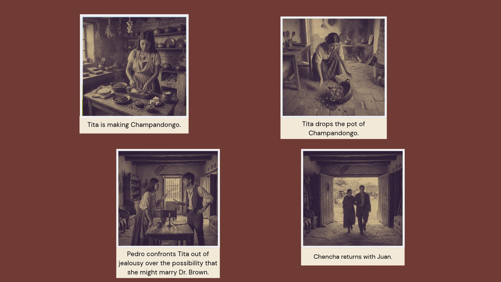

Fotonovela del Capítulo 8

En este capítulo, Tita prepara champandongo mientras la tensión en el rancho crece. Mamá Elena sigue intentando controlar cada movimiento de Tita, pero los sentimientos entre Tita y Pedro encuentran la forma de manifestarse a través de la comida y la música.